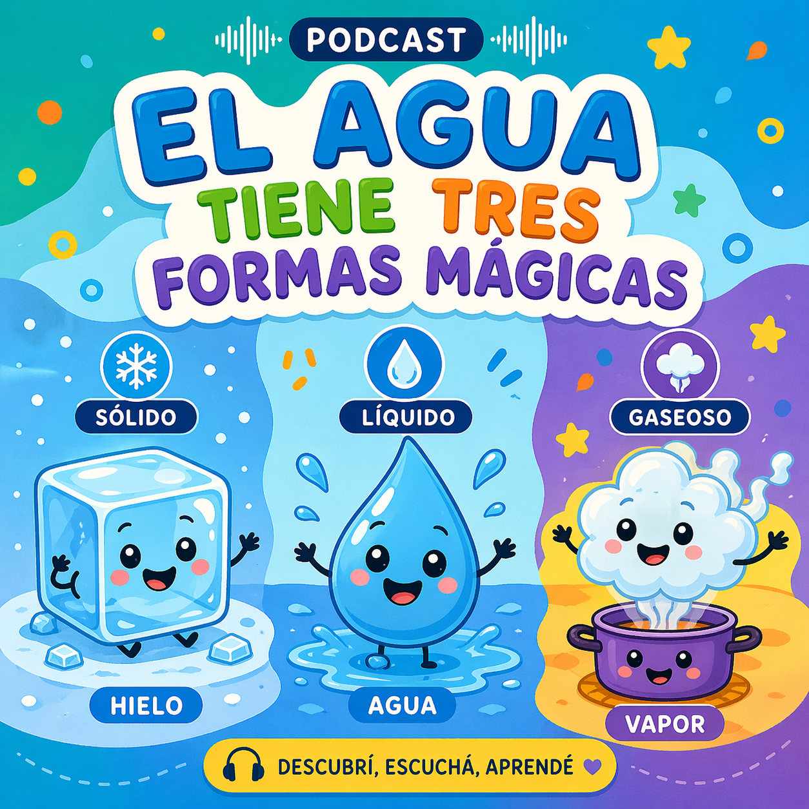

Cuatro recursos creados con IA
A lo largo de la cursada produjimos cuatro recursos educativos utilizando distintas herramientas de inteligencia artificial generativa. Cada uno está documentado con los prompts utilizados, el proceso de ajuste y los créditos correspondientes.
Texto académico: IA, robótica educativa y educación inclusiva
Texto académico que analiza cómo la inteligencia artificial y la robótica educativa contribuyen a la construcción de entornos accesibles para niños y niñas con capacidades diferentes. Se desarrollaron conceptos como NLP, prompt engineering, y el rol del tecnólogo educativo como mediador crítico.
Proceso de creación
Se utilizaron prompts progresivos, comenzando con instrucciones generales y avanzando hacia prompts contextualizados con marco pedagógico:
- Herramienta: ChatGPT (GPT-5) · OpenAI
- Ajustes realizados: Reformulación de consignas, simplificación del lenguaje, reorganización del contenido y eliminación de repeticiones.
- Autoras/es: D'Onofrio, Escudero y Gómez (2026)
Fragmento del texto generado
"La inteligencia artificial y la robótica educativa se han consolidado como herramientas clave en la construcción de entornos educativos accesibles, especialmente en contextos que requieren atender la diversidad de capacidades de los estudiantes. Desde un enfoque pedagógico, la IA posibilita la personalización del aprendizaje, ajustando el nivel de dificultad, el ritmo y el formato de los contenidos según las necesidades individuales."
El texto completo fue producido en la Actividad Grupal – Unidad 2 y forma parte de la documentación del proyecto. La validación del contenido y la revisión crítica estuvieron a cargo del equipo.
Herramientas comparadas
| Herramienta | Uso |
|---|---|
| ChatGPT | Generación de texto académico |
| Rytr | Apoyo en producción escrita |
| NeuronWriter | Optimización de comprensión |
| SpinRewriter | Simplificación de textos |
Animación: Rutinas escolares para niños con TEA
Animación educativa en estilo LEGO que representa rutinas escolares estructuradas — llegada, organización, tarjetas visuales, recreo, agenda y cierre — para ayudar a niños y niñas con TEA a anticipar su jornada escolar con tranquilidad y autonomía.
Proceso de creación
- Guión: ChatGPT (OpenAI)
- Video (1er intento): Gemini Veo — videos de 7 segundos
- Video (2do intento): CapCut + Sora — 35 segundos
- Video (3er intento): Google NotebookLM — versión final <2 min
- Narración: voz en off en español latino, tono claro y pausado
- Autoras/es: D'Onofrio, Escudero y Gómez (2026)
Podcast: El agua tiene tres formas mágicas
Podcast educativo sobre los estados del agua (sólido, líquido, gaseoso), diseñado para estudiantes de segundo ciclo de primaria con especial atención a niños y niñas con TEA: frases cortas, repetición, ejemplos cotidianos, tono calmado y estructura paso a paso.

Proceso de creación
- Guión: ChatGPT (GPT-5) · OpenAI
- Voz/narración: ElevenLabs · Eleven Multilingual v2 · voz "July"
- Edición de audio: Audacity
- Música de fondo: Pixabay (libre de derechos)
- Portada: Imagen generada con ChatGPT (IA)
- Distribución: SoundCloud
- Autoras/es: D'Onofrio, Escudero y Gómez (2026)
Herramientas de síntesis de voz comparadas
| Herramienta | Ventaja clave | Limitación |
|---|---|---|
| ElevenLabs | Voces naturales, multiidioma | Plan gratuito limitado |
| PlayHT | Fácil de usar | Menor personalización emocional |
Video: IA y robótica educativa para la inclusión
Video educativo en formato de diálogo entre tres presentadores (Victoria, Leonel y Ximena), que explica el rol de la IA y la robótica educativa en la construcción de entornos accesibles. Producido íntegramente con herramientas de IA generativa.
Proceso de creación
- Guión: ChatGPT (GPT-5) · OpenAI
- Producción visual: Canva IA (escenas, animaciones, subtítulos automáticos)
- Música de fondo: Suno (generación de música con IA)
- Subtítulos: generados automáticamente con IA de Canva
- Autoras/es: D'Onofrio, Escudero y Gómez (2026)
Herramientas de video comparadas
| Criterio | Runway | Veed.io | Canva IA |
|---|---|---|---|
| Tipo | Generación con IA | Edición con IA | Diseño y edición |
| Ventaja | Alta creatividad | Fácil de usar | Todo integrado |
| Desventaja | Menor control | Menor generación automática | Menor generación |
Enlaces y actividades
En esta sección vamos a ir sumando enlaces a actividades, formularios, juegos u otros recursos externos relacionados con el proyecto.
Actividad 1: Circuito base: electricidad, positivo y negativo
Circuito en Tinkercad con pila, LED, resistencia, buzzer y sensor para explorar la polaridad y las conexiones. Probá invertir la pila o quitar la resistencia, anotá qué observás y compartilo con tu grupo.
Abrir actividad →Actividad 2: Semáforo con LED: programando turnos y transiciones
Circuito de un semáforo con tres LED (rojo, amarillo y verde) conectados a un Arduino Uno simulado en Tinkercad, programado en bloques para repetir el ciclo: rojo (pausa) → amarillo (atención) → verde (acción), cada uno encendido 2 segundos. Observá el ciclo completo y probá cambiar los segundos de algún bloque "esperar": ¿qué pasaría si el rojo durara más que los otros colores? Pensá cómo podría usarse esta misma lógica de colores y tiempos para anticipar turnos o actividades en un aula con niños y niñas con TEA.
Abrir actividad →Actividad 3: Diseño 3D: el semáforo como objeto físico
A partir del circuito programado, diseñamos en Tinkercad un modelo 3D del semáforo para imprimir: un poste con base, una caja con tres aberturas para los colores y un hueco interno para los cables. La idea es que se convierta en un objeto físico que un niño o niña pueda tocar, mover o señalar. Explorá el modelo y pensá: ¿qué tamaño necesita para manipularse cómodo?, ¿qué material usarían para imprimirlo?, ¿cómo se conecta con los roles de armador/a, operador/a y narrador/a de la actividad grupal?
Abrir actividad →